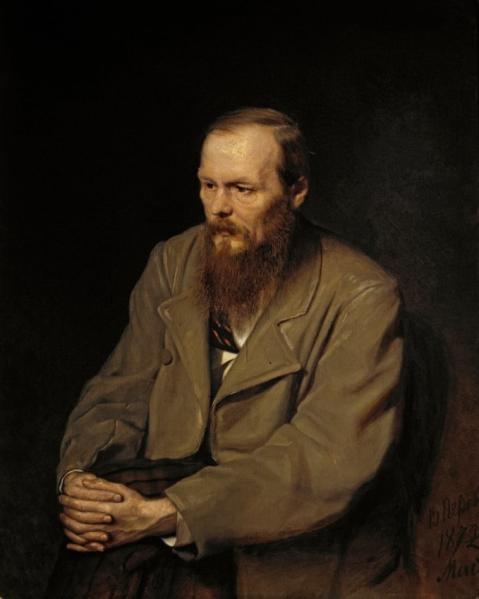
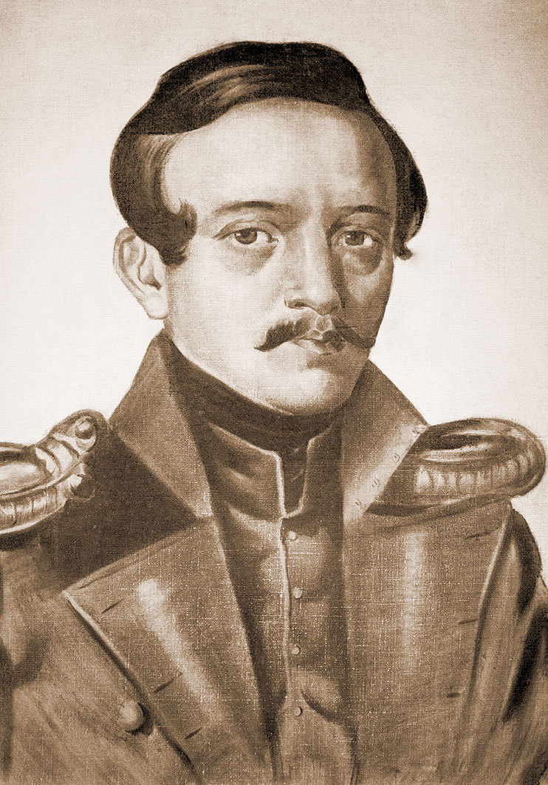
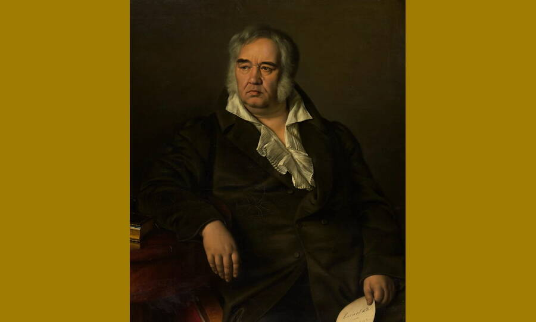
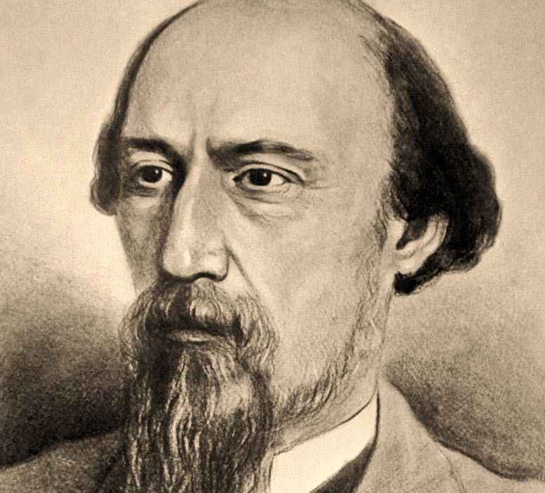

Dostoevskiy

Фёдор Михайлович Достоевский-русский писатель, мыслитель, философ и публицист. Член-корреспондент Петербургской академии наук с 1877 года
Lermontov

Михаил Юрьевич Лермонтов-великий поэт и прозаик. Родился в Москве 15 октября 1814 года, ушел из жизни в результате дуэли 27 июля 1841 года в Пятигорске.
Krylov

русский писатель, мыслитель, философ и публицист. Член-корреспондент Петербургской академии наук с 1877 года.
Nekrasov

Николай Алексеевич Некрасов-русский поэт, прозаик и публицист. Является классиком русской литературы. По взглядам его причисляют к «революционным демократам».
Mayakovskiy

Владимир Владимирович Маяковский-русский и советский поэт, драматург, киносценарист, кинорежиссёр, киноактёр, художник. Лауреат премии Ленинского комсомола (1968 — посмертно).